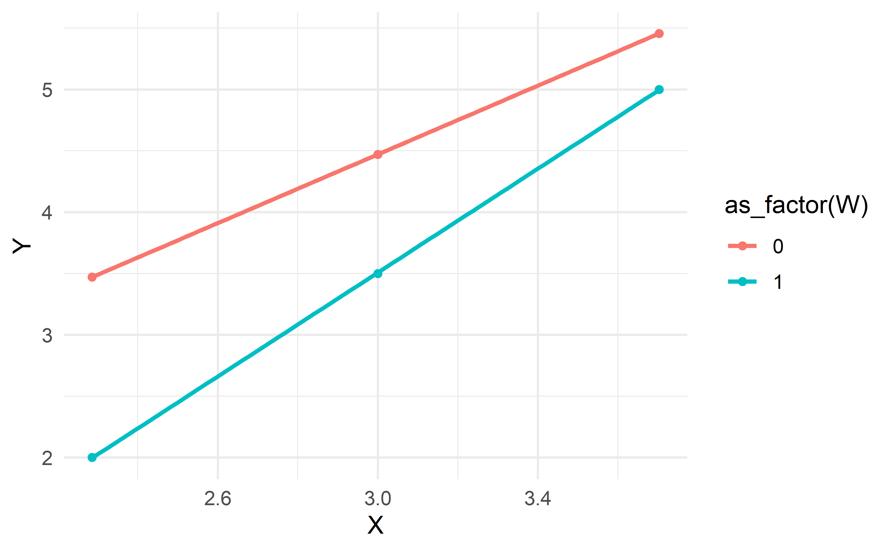

process(
data = data,
y = "xxxxx",
x = "xxxxx",
m = "xxxxx",
w = "xxxxx",
z = "xxxxx",
cov = "xxxxx",
model = 999,
converge = 0.00001,
iterate = 100,
hc = 5,
jn = 0,
effsize = 0,
stand = 0,
xmtest = 0,
normal = 0,
mdichok = 0,
contrast = 999,
modelbt = 0,
matrices = 0,
covmy = 0,
covcoeff = 0,
boot = 5000,
mc = 0,
intprobe = 0.1,
plot = 0,
total = 0,
save = 0,
mcx = 0,
mcw = 0,
mcz = 0,
moments = 0,
progress = 1,
exclude = 0,
bmatrix = -999,
wmatrix = -999,
zmatrix = -999,
wzmatrix = -999,
cmatrix = -999,
xcatcode = 999,
wcatcode = 999,
zcatcode = 999,
wmodval = 999,
zmodval = 999,
center = 0,
conf = 95,
seed = -999,
decimals = 9.4,
maxboot = 0,
modelres = 0,
bc = 0,
outscreen = 1,
activate = 0,
describe = 0,
listmiss = 0,
linsum = -999,
xmint = 0,
xrefval = 999,
coval = -999,
cdeval = -999
)Função PROCESS para R
A função process() para R foi desenvolvida por Andrew F. Hayes e está descrita detalhadamente no livro Introduction to Mediation, Moderation, and Conditional Process Analysis.
É recomendável ler o livro ou seus materiais complementares para compreender a motivação teórica e estatística por trás dos cálculos implementados. O código do PROCESS para R pode ser obtido em: https://haskayne.ucalgary.ca/CCRAM/resource-hub.
Uso
Argumentos
data
Data frame contendo as variáveis necessárias para a análise.
y
String com o nome da variável dependente (outcome).
x
String com o nome da variável independente principal (predictor).
m
Vetor de strings com uma ou mais variáveis mediadoras.
w
String com o nome do primeiro moderador (opcional).
z
String com o nome do segundo moderador (opcional).
cov
Vetor de strings com as covariáveis a serem incluídas no modelo.
model
Número inteiro que especifica um modelo predefinido no PROCESS (p.ex., 4 = mediação simples, 1 = moderação simples, etc.). Se ausente ou 999, pode-se usar matrizes personalizadas (bmatrix etc.).
converge
Critério de convergência para regressão logística (padrão: .0001). O critério de convergência é atendido quando mudanças nos coeficientes de regressão logística resultam em uma mudança na probabilidade de menos do que o critério especificado. Nesse ponto, a iteração para e a solução é fornecida. Uma falha na convergência pode às vezes ser retificada aumentando o número de iterações ou aumentando o critério de convergência. No entanto, isso aumentará o tempo computacional. Isso pode ser feito com as opções iterate e converge.
iterate
Número máximo de iterações para regressão logística (padrão: 100).
hc
Método de correção para heterocedasticidade (0 a 4). Especifica o tipo de matriz de variância Huber-White (HC0, HC1, HC2, HC3, HC4) a ser usado no lugar do “modelo de homocedasticidade” usado por padrão (por exemplo, para o estimador HC3, especifique hc = 3). Qualquer computação que use o erro padrão de um coeficiente de regressão empregará automaticamente o estimador HC quando esta opção for solicitada, incluindo o teste de Sobel, intervalos de confiança de Monte Carlo para efeitos indiretos, o método Johnson-Neyman, testes de efeitos condicionais em análise de moderação e o teste de significância de \(Rˆ2\) para modelos de Y, bem como para testes de interações com base na diferença em \(Rˆ2\) quando a interação é incluída versus excluída do modelo.
jn
Executa análise de Johnson-Neyman para encontrar “regiões de significância” em análises de moderação (0 = não, 1 = sim).
effsize
Retorna efeitos indiretos parcial ou completamente padronizados (0 = não, 1 = sim).
stand
Gera coeficientes padronizados do modelo, de efeitos diretos, indiretos e totais (0 = não, 1 = sim). Não estão disponíveis para modelos com moderadores.
xmtest
Testa se há interação entre X e o(s) mediador(es) (0 = não, 1 = sim).
normal
Realiza o teste de Sobel para o(s) efeito(s) indireto(s) (0 = não, 1 = sim).
mdichok
Controla a permissão de mediadores dicotômicos (0/1). mdichok = 0 (padrão): o PROCESS interrompe a execução e exibe o erro 43 (“PROCESS does not allow dichotomous mediators”) se detectar um mediador 0/1.mdichok = 1: desabilita essa verificação, permitindo a inclusão de um mediador dicotômico.
contrast
Inteiro (1 ou 2) ou vetor de pesos. Habilita a comparação de efeitos indiretos específicos em modelos de mediação múltipla (contínua ou dicotômica em X). Existem duas formas de uso: contrast = 1: constrói diferenças entre os efeitos indiretos específicos. contrast = 2: constrói diferenças entre os valores absolutos dos efeitos indiretos específicos. Em ambos os casos, as comparações surgem no output com rótulos como (C1), (C2) etc., acompanhadas de intervalos de confiança via bootstrap ou Monte Carlo (quando ativados). O contrast não está disponível se X for multicategórico (definido por mcx). Modelos com moderação: se há moderação, o contrast exibe as comparações entre os efeitos indiretos condicionais em diferentes valores do(s) moderador(es), mas apenas entre efeitos dentro de um mesmo mediador. Comparações entre mediadores distintos não são fornecidas. Modelos sem moderação, mas com múltiplos mediadores: pode-se passar um vetor de pesos para criar combinações lineares dos efeitos indiretos específicos e gerar intervalos de confiança para essas combinações. Os pesos devem ser informados na mesma ordem em que os mediadores aparecem no output. É possível usar pesos negativos para testar, por exemplo, a diferença entre somas de efeitos indiretos de grupos de mediadores. Exemplos de uso: contrast=1,1,0,0,0.: soma os dois primeiros efeitos indiretos (e ignora os demais) para gerar um único contraste bootstrap. contrast=1,1,-1,-1,0.: diferença entre a soma dos dois primeiros efeitos indiretos e a soma dos dois subsequentes.
modelbt
Gera intervalos de confiança com bootstrap para coeficientes de regressão não padronizados em cada equação de regressão que define o modelo (0 = não, 1 = sim). Esses intervalos de confiança bootstrap estarão sob as colunas “BootLLCI” e “BootULCI”. A média e o desvio padrão das estimativas bootstrap são exibidos sob as colunas intituladas “Boot-Mean” e “BootSE”. Os coeficientes de regressão originais são encontrados sob a coluna rotulada “Coeff”. Como o número padrão de amostras de bootstrap para os modelos 1, 2 e 3 é zero, a opção modelbt não terá efeito para esses modelos, a menos que o número de amostras de bootstrap seja explicitamente declarado usando a opção boot.
matrices
Exibe a representação matricial do modelo (0 = não, 1 = sim).
covmy
Controla em quais equações os covariáveis (cov) serão incluídos nos modelos com mediadores (0, 1 ou 2); covmy=0 (padrão) inclui as covariáveis tanto em todas as equações de mediação (para cada variável em m) quanto na equação de y; covmy=1 inclui as covariáveis somente nas equações de mediação (variáveis em m), excluindo da equação de y; covmy=2 inclui as covariáveis apenas na equação de y, não nas equações de mediação.
covcoeff
Exibe as matrizes de variância-covariância para os coeficientes de regressão em cada parte do modelo (0 = não, 1 = sim)
boot
Número de amostras para bootstrap (padrão: 5000).
mc
Especifica o número de amostras para o cálculo de intervalos de confiança via Monte Carlo em modelos de mediação simples ou paralela (Modelos 4 e 5). Por exemplo, mc = 5000 solicita 5.000 amostras. Se o valor definido for menor que 1.000, serão usadas 5.000 amostras por padrão. O argumento mc tem precedência sobre boot (caso sejam utilizados simultaneamente), porém é ignorado em modelos de mediação serial ou que envolvam moderação, situações em que os intervalos de confiança são gerados por bootstrap.
intprobe
Controla o nível de significância (α) para “sondar” (probe) a interação em um modelo com componente de moderação (padrão = 0.10).intprobe = .05, por exemplo, faz com que a interação seja investigada apenas se o p-valor for menor ou igual a 0.05. intprobe = 1 força a inspeção de toda e qualquer interação no modelo, independentemente de sua significância estatística. Quando a interação cumpre o critério definido em intprobe (p-valor ≤ α escolhido), o PROCESS exibe os efeitos condicionais do antecedente focal em diferentes valores do(s) moderador(es) — porém, apenas para a interação de ordem mais alta que não seja condicionada por outro moderador.
plot
Produz uma tabela de dados para visualizar uma interação (0 = não, 1 = sim).
total
Inclui efeitos totais na saída nos modelos de mediação sem efeitos moderadores (0 = não, 1 = sim). Para modelos personalizados, o efeito total não será produzido para nenhum modelo de mediação que fixe qualquer caminho entre X e Y, entre X e um mediador, ou entre um mediador e Y para zero. O efeito total também não será fornecido se algumas das covariáveis listadas em cov = forem excluídas dos modelos de Y ou de um dos mediadores em m =.
save
0, 1 ou 2; save = 0 não salva os resultados; save = 1 produzirá um banco de dados contendo todas as estimativas bootstrap dos coeficientes de regressão que definem o modelo; save = 2 irá gerar uma matriz contendo as estatísticas da saída do PROCESS para o modelo estimado. Todas as opções exigem o envio de informações do PROCESS para um objeto R usando o operador <- ao chamar a função process().
coef_boot <- process(
data = data, y = Y, x = X,
m = M, model = 4, modelbt = 1,
boot = 5000, save = 1
)
mcx, mcw, mcz
Define X, W ou Z como multicategóricos e especifica o método de codificação (1, 2, ou 3); 1 = codificação dummy (dummy coding); 2 = codificação sequencial (sequential coding); 3 = codificação Helmert (Helmert coding); 4 = codificação de efeitos (effect coding)
moments
Configura a forma de explorar a interação em modelos com moderadores quantitativos, produzindo os efeitos condicionais no valor médio do moderador, assim como em um desvio-padrão acima e um abaixo da média. (0 = não, 1 = sim).
progress
Exibe um contador gráfico indicando o progresso em direção à conclusão da amostragem por bootstrap (0 = não, 1 = sim).
exclude
Vetor (ou array unidimensional) com os números das linhas que devem ser removidas antes do processamento. Caso não seja especificado (ou seja igual a 0), nenhuma exclusão manual é feita além da remoção usual de casos com dados faltantes. exclude = c(2, 5, 10), por exemplo, removeria as linhas 2, 5 e 10 do dataset antes do cálculo.
cmatrix
Fornece um meio mais flexível de especificar em quais equações cada covariável será incluída, organizando-as em uma matriz com as variáveis consequentes (mediadores na ordem definida em mvlist e, por último, a variável dependente) nas linhas, e as covariáveis (na ordem em covlist) nas colunas. Cada célula recebe 1 caso se deseje incluir aquela covariável na equação do mediador ou da variável de desfecho correspondentes, ou 0 caso contrário, sendo lidas da esquerda para a direita, de cima para baixo. Por exemplo, se houver dois mediadores med1 e med2 e três covariáveis cov1, cov2, cov3, a linha med1 receberá 1 ou 0 indicando se cada uma das covariáveis entra na equação de med1, e assim por diante para med2 e para a variável de desfecho Y. Uma exigência importante é que cada covariável (coluna) possua ao menos um “1” em toda a matriz, pois o PROCESS rejeita colunas inteiramente zeradas. Se desejar excluir alguma covariável completamente de todas as equações, basta removê-la de covlist, em vez de incluí-la com zeros. Para conferir se seu cmatrix foi especificado corretamente, ative a opção matrices=1 e examine a “CMATRIX” nos resultados, onde será exibido exatamente em quais equações cada covariável foi alocada. No exemplo abaixo somente cov1 será incluída no modelo da variável mediadora M enquanto as 3 covariáveis serão incluídos no modelo da variável de desfecho Y
set.seed(1234)
N <- 100
X <- rnorm(N, mean = 50, sd = 10)
# Covariáveis
cov1 <- rnorm(N, 0, 1)
cov2 <- rnorm(N, 0, 1)
cov3 <- rnorm(N, 0, 1)
# Mediador influenciado por X e cov1
M <- 5 + 0.2*X + 0.4*cov1 + rnorm(N, sd=1)
# Desfecho influenciado por X, M e as três covariáveis
Y <- 10 + 0.1*X + 0.3*M + 0.2*cov1 - 0.1*cov2 + 0.4*cov3 + rnorm(N, sd=2)
data <- tibble(X, M, Y, cov1, cov2, cov3)***********************************************************************
Outcome Variable: M
Model Summary:
R R-sq MSE F df1 df2 p
0.8696 0.7561 1.2662 150.3840 2.0000 97.0000 0.0000
Model:
coeff se t p LLCI ULCI
constant 5.3600 0.5571 9.6208 0.0000 4.2543 6.4658
X 0.1921 0.0113 17.0574 0.0000 0.1698 0.2145
cov1 0.3907 0.1096 3.5647 0.0006 0.1732 0.6082
***********************************************************************
Outcome Variable: Y
Model Summary:
R R-sq MSE F df1 df2 p
0.7440 0.5536 3.4198 23.3127 5.0000 94.0000 0.0000
Model:
coeff se t p LLCI ULCI
constant 9.8947 1.2836 7.7088 0.0000 7.3462 12.4433
X 0.1797 0.0375 4.7987 0.0000 0.1054 0.2541
M 0.0269 0.1677 0.1605 0.8729 -0.3060 0.3598
cov1 0.2572 0.1949 1.3193 0.1903 -0.1299 0.6442
cov2 -0.2393 0.1953 -1.2250 0.2236 -0.6270 0.1485
cov3 0.4861 0.1816 2.6768 0.0088 0.1255 0.8466
*********************************************************************** bmatrix
Especifica (por uma sequência de zeros e uns) quais caminhos de um modelo de mediação e/ou análise de processo condicional serão livremente estimados e quais permanecerão fixos em zero. Internamente, o PROCESS organiza as mediadoras (em ordem) mais a variável dependente Y em linhas, e X (mais as mediadoras, em ordem) em colunas, formando uma matriz \((k+1) \times (k+1)\) para \(k\) mediadores. Para cada célula (linha i, coluna j), um “1” indica que a variável da coluna j afeta a variável da linha i; um “0” representa um caminho fixado a zero. Assim, o bmatrix permite construir modelos de mediação customizados – seja editando um modelo numerado (por exemplo, removendo um caminho “indesejado” ou adicionando um) ou partindo do zero, desde que o modelo seja recursivo (sem loops de feedback) e tenha no máximo seis mediadores. Além disso, cada coluna deve ter pelo menos um “1” (isto é, cada variável “envia” algum efeito) e cada linha deve ter ao menos um “1” (isto é, cada variável “recebe” algum efeito). Se uma variável for declarada mediadora, obrigatoriamente ela “envia” e “recebe” efeitos, sob pena de o PROCESS gerar erro de “dangling mediator.”
wmatrix
Define se W modera (por zeros e uns) os caminhos especificados no bmatrix. Em outras palavras, para cada caminho que no bmatrix esteja ativo (igual a 1), a wmatrix indica (com “1”) se aquele mesmo caminho terá interação com W (ex.: \(\beta_1 + \beta_2 W\)). Se o bmatrix for 0 num caminho (fixado a zero), não se pode atribuir “1” à wmatrix naquele caminho — o PROCESS acusará erro (“A path fixed to zero cannot be moderated”). Lembre que W é o “primeiro” moderador permitido em PROCESS, e só é relevante se esse moderador estiver efetivamente declarado (ex.: w="algumaVariavel"). Caso a wmatrix não seja fornecida (ou seja toda zero), significa que W não modera caminho algum.
zmatrix
Análogo à wmatrix, mas para o segundo moderador, Z. Em cada linha e coluna que correspondam a um caminho ativo no bmatrix, “1” indica que esse caminho é moderado por Z (resultando em algo como \(\beta_1 + \beta_3 Z\)). A existência de zmatrix só faz sentido se houver um z="algumaVariavel". Também se aplica a restrição de que não se pode moderar caminhos que estejam fixos a zero no bmatrix. Além disso, se há somente um moderador no modelo, obrigatoriamente deve ser W, então a zmatrix (se fornecida) deverá conter apenas zeros, ou o PROCESS gera erro.
wzmatrix
Permite especificar moderação de alta ordem (“moderated moderation” ou interação tripla). Se uma célula no wzmatrix for 1, isso indica que o mesmo caminho, além de já ter “1” em wmatrix e em zmatrix, será também moderado simultaneamente por W e Z, produzindo algo como \(\beta_1 + \beta_2 W + \beta_3 Z + \beta_4 (W \times Z)\). Se você atribuir “1” no wzmatrix, o PROCESS forçará automaticamente “1” nos mesmos caminhos de wmatrix e zmatrix, pois não se pode ter uma interação tripla sem as interações de segunda ordem. Esse comportamento não pode ser anulado. Assim, o wzmatrix serve para criar interações de três vias ou “moderated moderation.”
xcatcode, wcatcode, zcatcode
Instruem o PROCESS sobre como codificar variáveis X, W ou Z caso elas sejam multicategóricas (com três ou mais níveis). Normalmente, o PROCESS gera automaticamente dummies e interações para uma variável categórica; entretanto, se o pesquisador quiser um tipo de codificação específico (por exemplo, contrastes customizados, Helmert, efeitos, etc.), pode fornecer essas matrizes de codificação em xcatcode, wcatcode ou zcatcode. Cada coluna ou elemento representa a forma como cada categoria adicional será transformada em variáveis dummy (ou outro esquema). Se o vetor (ou matriz) for incompatível em tamanho ou não fizer sentido, o PROCESS gera erro e ignora a codificação. Esse recurso é útil em modelos de moderadores multicategóricos ou X multicategórico.
zmodval
Tem a mesma função do wmodval, porém para o segundo moderador Z. O usuário pode informar pontos específicos (por exemplo, zmodval=c(-1,0,1)) em que deseja extrair efeitos condicionais ou sondar interações. Se zmodval não for fornecido, o PROCESS usará níveis padrão da distribuição de Z (média ± desvio etc.). Assim como em W, se Z for multicategórica com codificações especiais (zcatcode), o zmodval perde o sentido ou pode causar inconsistência. Dessa forma, zmodval é o parâmetro que permite customizar os níveis em que se examina a moderação de Z.
center
Controla a centralização (em torno da média) das variáveis envolvidas na criação de produtos de moderação antes da estimação do modelo (0, 1, 2); center = 0 (padrão): não realiza a centralização das médias; center = 1: centraliza todas as variáveis (contínuas ou dicotômicas) usadas na formação de produtos. Os efeitos condicionais apresentados serão calculados com base nas variáveis já centradas em seus valores médios; center = 2: centraliza apenas as variáveis contínuas envolvidas em produtos, mantendo variáveis dicotômicas inalteradas. Variáveis multicategóricas não são centralizadas em nenhuma das opções, pois não há significado em centrá-las. Caso sejam especificados valores de moderadores (por exemplo, wmodval) ao mesmo tempo em que se utiliza o mean-centering, esses valores devem ser informados levando em conta a nova métrica centrada.
conf
Nível de confiança para intervalos de confiança gerados com bootstrap: de 50 a 99.9999 (padrão = 95).
seed
Um número inteiro para reprodutibilidade no bootstrap.
decimals
Valor especificando precisão decimal (padrão = 10.4 - quatro casas decimais).
maxboot
Máximo de tentativas para substituir amostras bootstrap inválidas.
modelres
Solicita a matriz de correlações de Pearson entre os resíduos das equações do modelo (0 = não, 1 = sim). Em alguns modelos ou para certas combinações de variáveis, os resíduos podem ser linearmente não correlacionados, resultando em correlações iguais a zero.
bc
Usa intervalos de confiança de bootstrap com correção de viés (0 = não, 1 = sim).
outscreen
Direciona saída para o console (0 = não, 1 = sim).
activate
Não controla nenhuma funcionalidade de análise ou estatística. Serve essencialmente para “ativar” o script, imprimindo na tela (quando activate = 1) a mensagem de que o PROCESS está pronto para uso, além de avisos de copyright, links etc. O argumento activate funciona como um “gatilho” para exibir essas mensagens de inicialização (ou “ativação”) e não interfere nos procedimentos de modelagem, bootstrapping ou quaisquer outras opções do PROCESS.
describe
Exibe estatísticas descritivas das variáveis do modelo (0 = não, 1 = sim).
listmiss
Controla a exibição na saída dos casos que foram removidos devido a dados ausentes - listwise deletion (0 = não, 1 = sim).
linsum
Vetor (ou matriz) de pesos que permite testar hipóteses específicas sobre combinações lineares dos coeficientes estimados no modelo. Em termos práticos, o PROCESS calcula \(\sum \beta_i \times \text{peso}_i\) e realiza um teste t (acompanhado de intervalo de confiança) para verificar se essa soma difere de zero. Exemplo: Para investigar a hipótese \(\beta_1 + 0.5 \times \beta_2 - 2 \times \beta_3 = 0\), forneça linsum = c(0, 1, 0.5, -2), desde que o primeiro elemento (0) corresponda ao intercepto e os demais (1, 0.5, -2) coincidam com \(\beta_1\), \(\beta_2\) e \(\beta_3\) na ordem em que o PROCESS estima os parâmetros. Restrições: Somente para regressão linear; somente em modelos com número menor que 4 (isto é, model < 4); o tamanho do vetor de pesos exatamente coincide com a contagem de parâmetros na equação de Y (respeitando intercepto, variáveis independentes e possíveis covariáveis), bem como a ordem em que surgem no output do PROCESS. O resultado aparece no final do output como “Linear Combination Estimate and Hypothesis Test”.
xmint
Ativa um procedimento contrafactual para o modelo 4, transformando-o internamente em “model 74” quando configurado para 1. Em outras palavras, xmint = 0 (padrão) não faz nenhuma mudança no modelo; xmint = 1 redireciona a análise para um modo em que X também atua como “moderador” de si mesmo, de modo que o PROCESS calcula efeitos contrafactuais de X (por exemplo, comparando um estado de X com outro). Nesse modo, especifica-se em xrefval quais valores de X atuarão como referência e contrafactual para o cálculo dos efeitos. Se o usuário tentar usar xmint = 1 em modelos que não sejam 4, o PROCESS sinaliza um erro.
xrefval
Permite especificar os valores de referência e contrafactual de X ao ativar a análise contrafactual (quando xmint = 1). Por exemplo, em um modelo 4 convertido internamente em “model 74”, caso queira comparar X = a (referência) e X = b (contrafactual), atribui-se xrefval = c(a, b); assim, o PROCESS calculará efeitos diretos, indiretos e/ou controlados levando em conta essa diferença de X entre a e b. Se X for dicotômico, xrefval deve corresponder aos valores de 0 e 1 (ou quaisquer dois níveis relevantes). Se o usuário não especificar xrefval, o PROCESS pode se recusar a realizar a estimação contrafactual, dependendo do tipo de X (contínuo versus dicotômico).
coval
Define valores específicos para as covariáveis (caso existam) na hora de calcular efeitos condicionais, contrafactuais ou controlados. Por padrão (coval = -999), o PROCESS usa os valores médios amostrais das covariáveis como ponto de referência no cálculo dos efeitos. Entretanto, se o usuário desejar estimar esses efeitos em níveis particulares de uma ou mais covariáveis, basta fornecer um vetor (ou matriz) em coval com o mesmo comprimento (ou dimensões) correspondente ao número de covariáveis e, então, o PROCESS as fixará naqueles valores informados em vez de usar as médias. Esse argumento é especialmente útil quando se quer avaliar o modelo em cenários hipotéticos, mantendo as covariáveis em métricas distintas das médias do conjunto de dados.
cdeval
Define valores específicos para os mediadores (caso existam múltiplos, deve corresponder à quantidade de mediadores) utilizados no cálculo de efeitos controlados (controlled direct effects) ou contrafactuais. Por padrão, o PROCESS usa as médias dos mediadores ao estimar efeitos diretos controlados, mas ao fornecer valores em cdeval, o usuário instrui o PROCESS a fixar cada mediador em um valor escolhido — por exemplo, para explorar cenários “controlados” em que o mediador assume determinado nível. Se cdeval contiver apenas um conjunto de valores, todos os mediadores são fixados nesses mesmos valores; caso se deseje especificar valores diferentes para cada mediador, é necessário fornecer múltiplos valores na mesma ordem em que os mediadores foram declarados. Se a quantidade ou a ordem dos valores não corresponder aos mediadores do modelo, o PROCESS gera um erro.
Instruções gerais
PROCESS para R somente aceita dados em formato numérico. Assim, por exemplo, se uma variável chamada sex for codificada como “M” e “F” nos dados, esses códigos alfabéticos devem ser convertidos para o formato numérico (por exemplo, 0 e 1) antes de seu uso na função.
dados
#> # A tibble: 5 × 4
#> sex X M Y
#> <fct> <dbl> <dbl> <dbl>
#> 1 M 5 3 2
#> 2 F 1 4 3
#> 3 F 2 5 1
#> 4 M 5 3 5
#> 5 F 1 4 1
dados <- dados |>
mutate(
sex_process = case_when(sex == "M" ~ 0,
.default = 1),
.after = sex
)
dados
#> # A tibble: 5 × 5
#> sex sex_process X M Y
#> <fct> <dbl> <dbl> <dbl> <dbl>
#> 1 M 0 5 3 2
#> 2 F 1 1 4 3
#> 3 F 1 2 5 1
#> 4 M 0 5 3 5
#> 5 F 1 1 4 1PROCESS não aceitará variáveis que são designadas como fatores. A designação de fator deve ser removida de uma variável antes que ela possa ser usada.
dados
#> # A tibble: 5 × 4
#> sex X M Y
#> <fct> <dbl> <dbl> <dbl>
#> 1 0 5 3 2
#> 2 1 1 4 3
#> 3 1 2 5 1
#> 4 0 5 3 5
#> 5 1 1 4 1
dados <- dados |>
mutate(
sex = as.numeric(sex)
)
dados
#> # A tibble: 5 × 4
#> sex X M Y
#> <dbl> <dbl> <dbl> <dbl>
#> 1 1 5 3 2
#> 2 2 1 4 3
#> 3 2 2 5 1
#> 4 1 5 3 5
#> 5 2 1 4 1Dados ausentes devem ser representados no banco de dados como NA.
dados
#> # A tibble: 5 × 4
#> sex X M Y
#> <fct> <dbl> <dbl> <dbl>
#> 1 M 5 3 2
#> 2 999 1 4 3
#> 3 F 2 5 999
#> 4 M 5 3 5
#> 5 F 1 999 1
dados <- dados |>
mutate(
across(where(is.double),
\(x) na_if(x, 999)),
across(where(is.factor),
\(x) na_if(x, "999"))
) |>
mutate(
sex = case_when(sex == "M" ~ 0,
sex == "F" ~ 1)
)
dados
#> # A tibble: 5 × 4
#> sex X M Y
#> <dbl> <dbl> <dbl> <dbl>
#> 1 0 5 3 2
#> 2 NA 1 4 3
#> 3 1 2 5 NA
#> 4 0 5 3 5
#> 5 1 1 NA 1PROCESS para R requer que nomes de variáveis sejam colocados entre aspas duplas (por exemplo, y = “hello”).
Quando mais de uma variável é listada como mediadora ou covariável, os nomes das variáveis devem ser separados por uma vírgula e colocados na função c(), como em m = c("med1", "med2", "med3") e cov = c("cov1", "cov2").
A opção plot no PROCESS para R produz uma tabela de dados para visualizar uma interação, mas não escreve nenhum código R para produzir o gráfico, nem o PROCESS produzirá um gráfico na janela R. Salve a tabela num objeto usando a função tribble() e utilize ggplot2 para gerar o gráfico.
Focal predictor: X (X)
Moderator: W (W)
Data for visualizing the conditional effect of the focal predictor:
X W Y
2.286 0.000 3.471
3.000 0.000 4.471
3.703 0.000 5.456
2.286 1.000 2.000
3.000 1.000 3.500
3.703 1.000 5.000library(tidyverse)
dados <- tribble(
~X, ~W, ~Y,
2.286, 0.000, 3.471,
3.000, 0.000, 4.471,
3.703, 0.000, 5.456,
2.286, 1.000, 2.000,
3.000, 1.000, 3.500,
3.703, 1.000, 5.000
)
dados
#> # A tibble: 6 × 3
#> X W Y
#> <dbl> <dbl> <dbl>
#> 1 2.29 0 3.47
#> 2 3 0 4.47
#> 3 3.70 0 5.46
#> 4 2.29 1 2
#> 5 3 1 3.5
#> 6 3.70 1 5dados |>
ggplot(
aes(x = X, y = Y,
color = as_factor(W))
) +
geom_point() +
geom_smooth(
method = "lm", se = F
)
O gerador de números aleatórios padrão em R é diferente do gerador de números aleatórios padrão em SPSS e SAS. Assim, os intervalos de confiança bootstrap gerados pelo R serão diferentes daqueles produzidos por SPSS e SAS, mesmo quando a mesma semente for usada ao estimar o mesmo modelo usando os mesmos dados.